PENDING OWNER VISUAL AND FUNCTIONAL REVIEW. Identidad compartida y actividad disponible primero; catálogo ilustrativo sin métricas vacías. No se han añadido logros ni reglas de obtención.
Antes: baseline a31d67b, capturada antes de editar. Cada par conserva los mismos datos ficticios, idioma, apariencia y viewport. Capturas reales sin composición ni retoque. La referencia original privada no se publica.
| Vista | Antes | Después |
|---|---|---|
| Perfil · móvil | 874 | 477 |
| Insignias · móvil | 587 | 334 |
| Profile · desktop | 472 | 187 |
| Badges · desktop | 595 | 350 |
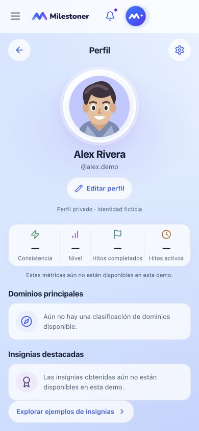
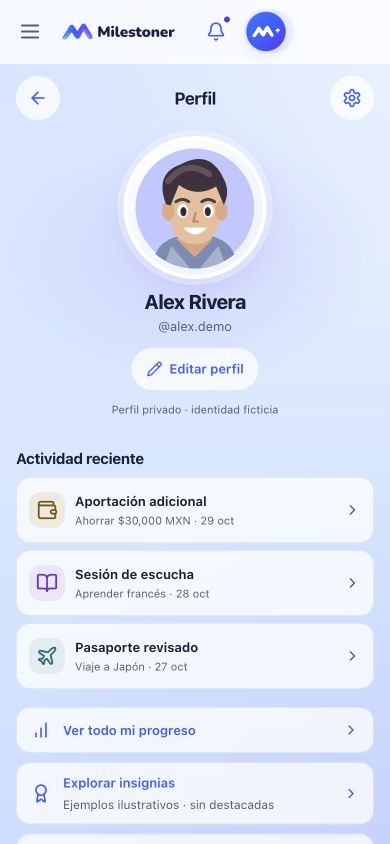
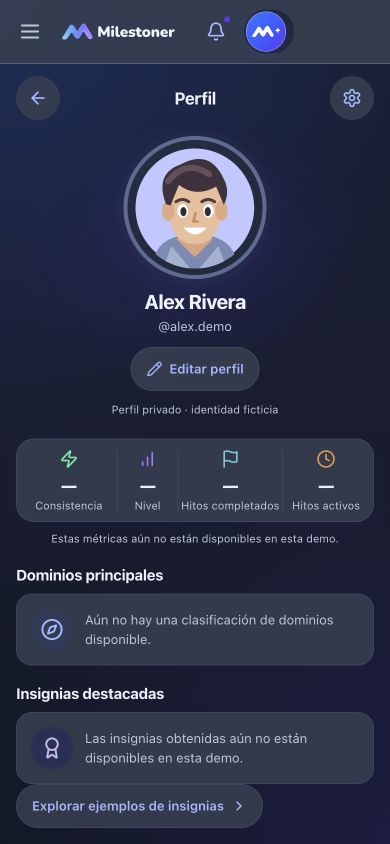
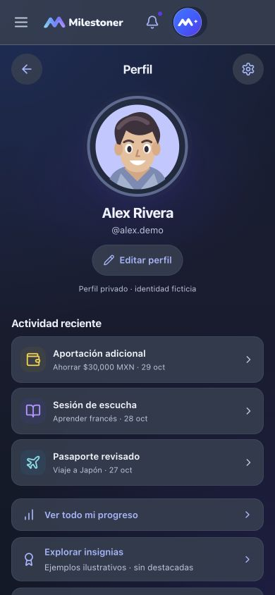
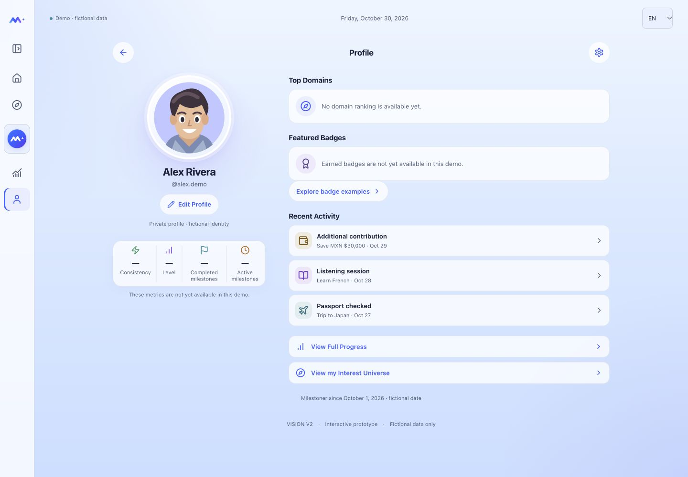
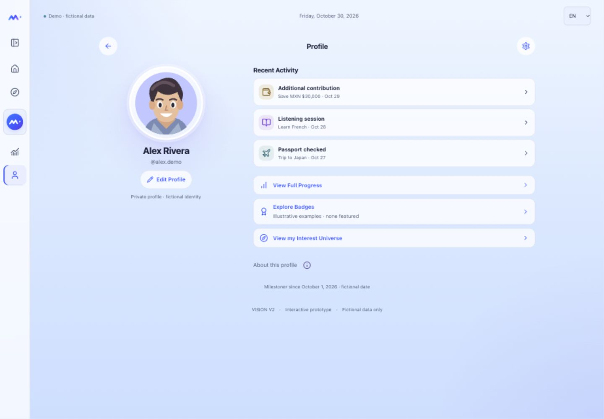
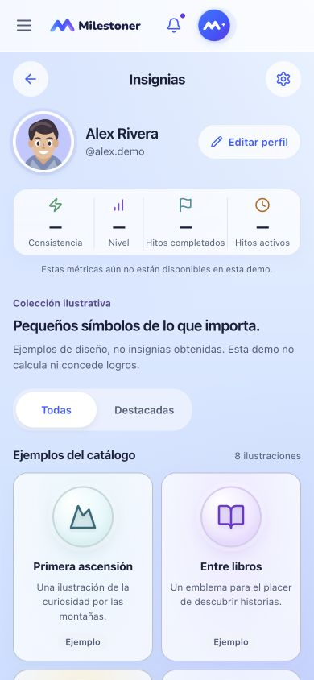
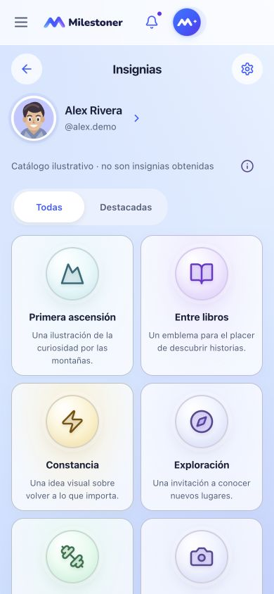
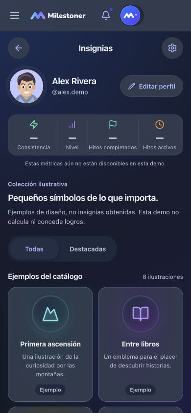
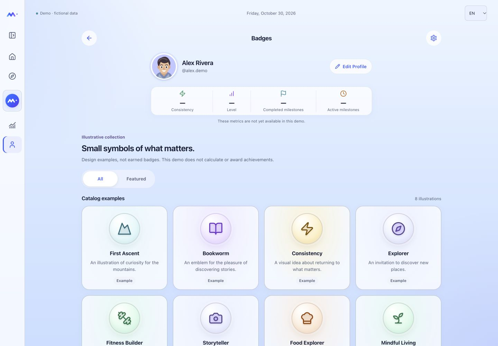
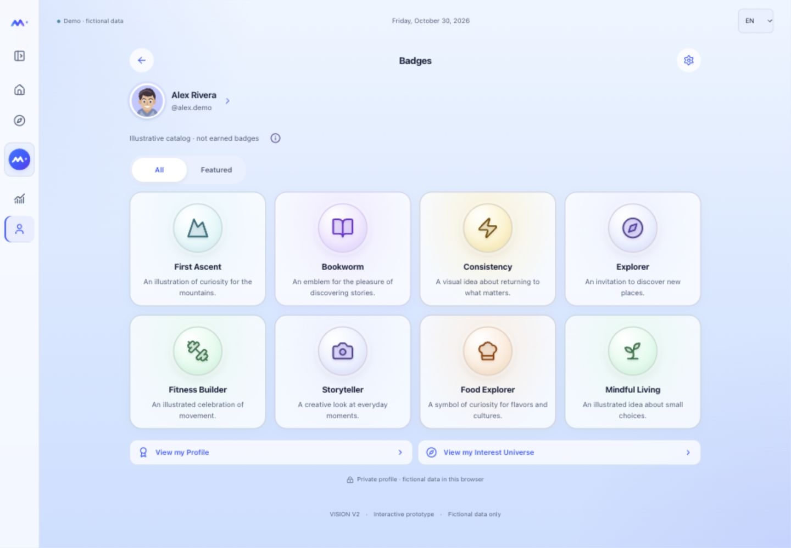
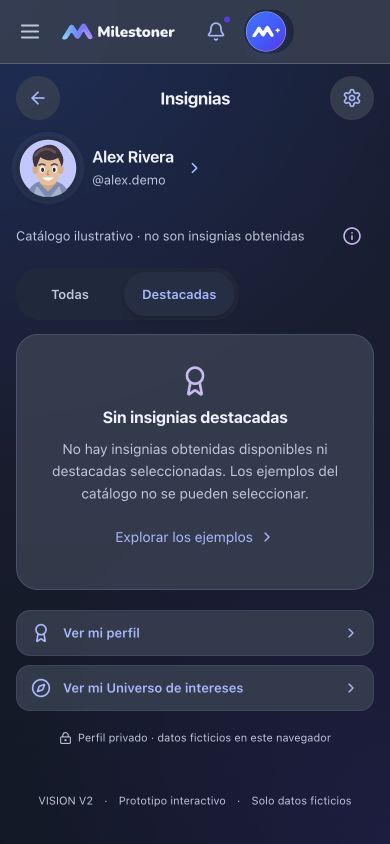
La actividad conserva registros, fechas y proyectos. Las ocho insignias son ilustraciones, no logros obtenidos; Destacadas sigue vacía. Las explicaciones opcionales reutilizan la ayuda nativa con Escape y retorno de foco. Con texto ampliado, el catálogo se reorganiza sin reducir fuentes ni objetivos interactivos. No cambian Interest Universe, Edit Profile, Home, M+, onboarding, Account ni servicios. El filtro Hitos y la futura elegibilidad de insignias requieren decisiones del propietario. V2.6.1d no se ha iniciado.